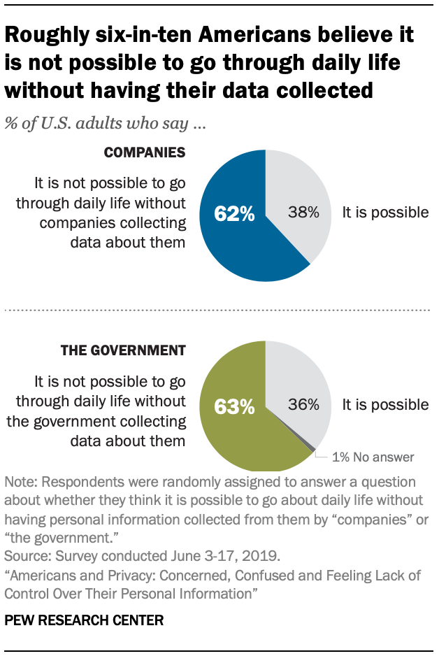

Technology have completely change the way we connect with eachother
Technology has made society progress at a rapid rate, innovations that used to be impossible a few decades ago are now possible thanks to technology. The rise of the information age has completely changed how and to whom we can communicate with. Due to how powerful software and hardware have become in recent years, society is able to make great strides in important sectors such as healthcare, business, and education. Despite the overwhelming positive benefits of technology, it also exacerbates many problems that society was already facing, forcing many individuals to step back and objectively analyze the unintended consequences that technology is having on our society. This multimedia story will take an in depth look at how technology is a useful tool, and that the many effects that it has on society is simply caused by how people use the technology.
Technology in healthcare
World Government Summit, 2017
The incorporation of personal technology in healthcare have change how and where medical decisions are made, and treatment is rendered. By implementing a combination of wearable technology, health monitor technology, telemedicine, home diagnostics, technology has completely changed the healthcare landscape (World Government Summit, 2021).
Furthermore, mobile device is one of the biggest innovation of the digital age because of it people can always be online no matter where they are, which mean that we are always connected one way or another. This new connection has led to the emergence of medical mobile apps, and they have completely change the hospital experience by healthcare patients (Redding, 2020).
Technology in Business
Technology has been one of the most revolutionary things that happen in the business world, it not only improving many processes that make a business run more efficient, it also open new ways for people to communicate with each other. One of the most important things that technology improve is the communication aspect of business. Since most businesses are hierarchical in nature their core aspect of involve interacting with people and building relationships with them, the digital world has made this easier than ever. Moreover, business have a huge amount of data that they need to store to maintain and improve their services, thanks to technology they can use “minimal resources consumed in processing business activities, allowing room for better products produced and faster services delivered to more clients and customers” (The role of technology in business, 2021). Business was already a complex web of process that involve many interconnected parts such as communication, transportations, and many other layers, technology has completely changed that complex process, and create something that is more manageable and scalable to the upper management (EBM Team, 2019). Technology has revolutionized business models and concepts and making business more profitable than ever.
Businiss are seeing spikes in productivity Voluptates, adipisci!
Technology have make marketing more efficient Voluptates, adipisci!
Business can use analytics to increase revenue Voluptates, adipisci!
Technology in education
Technology is completely changing the education field, now because of technology teachers and professors can optimize the way they provide their content to their students. Teachers can use a variety of apps, and technology devices to boost engagement in the classroom (Lynch, 2020). This field combining technology and education together has been called, “education technology.” Not only does this form of technology allow people to learn anywhere in the world, but it also creates a new form of learning called asynchronous learning. Which allows students to go at their own pace when learning new information. One of the most important aspect technologies provide to educators is that it allows them keep organize progress of the students, and the students can access their information whenever they want to (Lynch, 2020). Moreover, students can gain much more from their education since they can use the internet to do in depth research on topics pertaining to the course.
Professor Nesi using tweeter to engage with his students.
Negative effects of Technology
Lack of Privacy
Technology has become extremely prevalent in our society to the point that it is embedded in our lives. One of the problems that arise is privacy. Today a lot of technology devices are data driven which mean that they collect data from their users to make their services better. In this research by Pew Research Center, I learn how those data driven technologies have left people feeling concerned and confused over how little control they have over their personal information (Auxier et al., 2017). This has led to some pretty pessimistic views regarding users' privacy. The main points of the research were that six-ten-Americans believe that it is not possible to go through daily without having their data being collected, and how most Americans feel that they have little control over what data about them is being collected by companies and the government.

Imformation Disorder
Technology has allowed us to have so much information readily available to use, but with so much information available to us, new troublesome issues have arisen. These issues are misinformation, disinformation, and confirmation bias (Global News, 2019). If these problems keep persisting, they could have long lasting negative effects on our society. Fake news and misinformation are becoming rampant in our society, online it has becoming extremely hard to distinguish real from fake, people can no longer believe what they see, online without questioning if it’s fake. Furthermore, the reach and viral nature of social media platforms enable fake news and misinformation to spread faster than usual. Much research shows that misinformation can fuel chaos, confusion, and violence in countries that have political conflicts. The rise of misinformation and disinformation has led many experts to believe that it is a serious issue in digital spaces that might have a huge impact on the digital world (Vogels et al., 2020).
The tricks of misinformation have far outstripped the ability of people to reliably tell whether they are receiving BS or not – not to mention that it requires a constant state of vigilance that’s exhausting to maintain.
-Greg Shatan
Fake news is more and more used to manipulate a person’s opinion. This war of information is becoming so important that it can influence democracy and the opinion of people before they vote in an election for instance.(Vogels et al., 2020)
-An expert in the ethics of autonomous systems based in Europe
Axiom research showing how fake news is getting more traction
Conclusion
After taking a more in depth look on the effect that technology have on society, I’ve come to the conclusion that ultimately technology is just a tool, the effects that it has on society is simply caused by human behavior, and that despite the usefulness of the technology there is always a possibility it might have unintended consequences. That is why the creators of new innovation must always think what social implication that their technology might have on society. As someone who is currently learning about the Software Development Life Cycle (SDLC), an application standard that many companies used to build software I believe that expert in the technology field should come together to add a new stage to that development cycle that added a social informatic aspect to it. This new stage of the SDLC would allowed the creators of the software to get together and discuss how human behaviors might completely change and distorted the way they were expecting their technology to behave. This will not only give them time to think of the negatives effects of their technology might have on the world, but they will also be able to proactively create laws that stop the bad actors before they started.
References
Auxier, B., Rainie, L., Anderson, M., Perrin, A., Kumar, M., & Turner, E. (2020, August 17). Americans and privacy: Concerned, confused and feeling lack of control over their personal information. Pew Research Center: Internet, Science & Tech. Retrieved March 7, 2022, from https://www.pewresearch.org/internet/2019/11/15/americans-and-privacy-concerned-confused-and-feeling-lack-of-control-over-their-personal-information/
EBM Team. (2019, May 13). Ways technology is improving business - EBM. European Business Magazine. Retrieved March 7, 2022, from https://europeanbusinessmagazine.com/technology/ways-technology-improving-business/
Hannay, F. (2019, August 30). The impact of new technology on marketing. #DMWF World Series. Retrieved March 6, 2022, from https://www.digitalmarketing-conference.com/the-impact-of-new-technology-on-marketing/
Purdue Online. (n.d.). How has technology changed education? Purdue University Online. Retrieved March 7, 2022, from https://online.purdue.edu/blog/education/how-has-technology-changed-education
Redding, H. (2020, January 29). Three benefits of using mobile app technology in the healthcare industry. Advanced Data Systems Corporation. Retrieved March 6, 2022, from https://www.adsc.com/blog/benefits-of-using-mobile-app-technology-in-healthcare-industry
Stewart, E. (2020, December 22). America's growing fake news problem, in one chart. Vox. Retrieved March 7, 2022, from https://www.vox.com/policy-and-politics/2020/12/22/22195488/fake-news-social-media-2020
World Government Summit. (2021, Dec 12). How is technology changing the healthcare sector?[Video]. YouTube. https://www.youtube.com/watch?v=cM4aep7VXb8&ab_channel=WorldGovernmentSummit
The role of technology in business. Oklahoma Small Business Development Centers. (2021, June 17). Retrieved March 18, 2022, from https://www.oksbdc.org/the-role-of-technology-in-business/
Lynch, M. (2020, June 30). A 2021 definition of Edtech. The Tech Edvocate. Retrieved March 19, 2022, from https://www.thetechedvocate.org/a-2021-definition-of-edtech/
Vogels, E. A., Rainie, L., & Anderson, J. (2020, October 23). 5. tech causes more problems than it solves. Pew Research Center: Internet, Science & Tech. Retrieved March 19, 2022, from https://www.pewresearch.org/internet/2020/06/30/tech-causes-more-problems-than-it-solves/
Global news. (2019, June 13). 'Fake News' explained: How disinformation spreads. [Video]. Youtube. https://www.youtube.com/watch?v=8fQdzVbQlaU&ab_channel=GlobalNew
Ewumi, O. (2021, February 2). The effects of Technology on Mental Health (& Simple Tips to optimize its use). Thrive Global. Retrieved March 19, 2022, from https://thriveglobal.com/stories/the-effects-of-technology-on-mental-health/
TEDx Talks. (2017, June 2022). Is Social Media Hurting Your Mental Health? | Bailey Parnell | TEDxRyersonU. [Video]. Youtube. https://www.youtube.com/watch?v=Czg_9C7gw0o&ab_channel=TEDxTalks